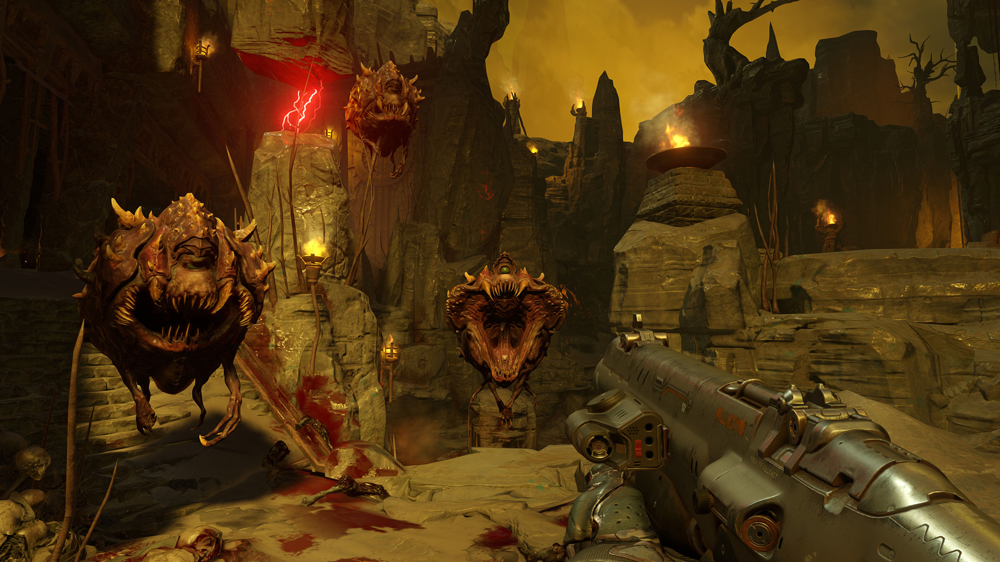

The History of Doom
Main Games
History of Doom
Doom (1993)

Doom 1 is the first game in the Doom series. The series revolved around playing as a marine known as the "Doom Guy" or "Doom Slayer".
The goal in the game is to try and defend off a hellish invasion of demons and save humanity.
It all started in 1992 when creators Id software had finished developing their new engine, the Doom Engine. While the other developers of id continued working on
Wolfenstien 3D, the rest of the team split off to create Doom.
Developer and programmer John Carmack wanted to create a 3D engine that was fast enough to be able to play games. He managed to accomplish this by restricting the
gameplay and viewpoint to a single plane. While Doom isn't the first first-person shooter, it was so influential that all subsequent games like it were
called Doom-Clones. Even though the term Doom-Clones isn't used today, it's legacy will forever live on in the term first-person shooter.
Doom2 (1994)

Doom2 came shortly after the first one, being released only a year later.
The biggest differences from Doom and Doom 2 is that the game featured larger more expanisve levels, new enemies, and a new weapon was added, the super shotgun.
The super shotgun is notorious in Doom and is probably the most iconic weapon in the series. In terms of overall gameplay though, nothing much was really changed
and most of the development time was spent on beefing up the engine to allow for larger and more intricate levels. The overall reception of Doom 2 was extremely positive,
where the vast majority of fans and critics believed that the game added on the already good aspects of the game and made them better.
Doom64 (1997)

Doom64 is the third main game in the series and was released a year after Final Doom in 1996. It was developed by Midway Games and was supervised
by game studo Id software. As the name suggests, Doom64 was released on the Nintendo 64. One of the big differences of Doom64 and its predecessors is that the
games environments were created using 3D polygon models instead of using 2D sprites. Despite this, the game still used 2D sprites to represent the player character,
all of their weapons, and all of the enemies. The game also features all of the weapons and enemies from Doom2 but with all new sprites, mechanics, and sound effects.
This was also the first main series Doom game to have a new Hud.
Doom3 (2004)
After 7 years, Id software developed a new Doom game, Doom 3. Doom 3 was the first fully 3D modeled Doom game and it also differed when it cames to gameplay and atmosphere.
Id decided they wanted Doom 3 to be more narrative focused and less around the gameplay. They did this by including more friendly NPCs that gave dialogue around the story.
Before Doom 3, this wasn't something that the series was known for. The game is also considered to be a survival horror first-person shooter and had less of a focus on
fast paced intense action. Despite all of the changes, Doom 3 was a not only a critical success, but also a commercial success. The game sold more that 3.5 million copies
and is the most successfull game that Id has developed to date. The massive changes to gameplay didnt come withou't critique of course and many of the hardcore
Doom fans were disappointed in the change of atmosphere and overall feel of the game.
Doom (2016)

12 years later, Doom 2016 is released. The game is a reimagining of the series in the vision of modern FPS games. It was developed by Id software and was published
by Bethesda. The gameplay returns to a much faster pace than Doom 3. The game focuses on this faster gameplay to create a smooth and fluid combat system that
is reminiscent to the earlier games in the franchise. One way it does is by introducing sometihing called glory kills. Glory kills are essentially executing enemies
that are low on health with a flashy animation. Glory kills also return health to the player to incentivize using them which greatly helps in increasing the pace of the game.
The games executive producer said that the games key principles in the single player mode are "badass demons, big effing guns, and moving really fast".
Doom Eternal (2020)

Doom Eternal is essentially Doom 2016 but on steroids. It reinforces the all of the key principles from Doom 2016 and then amplifies them by 10. Many of the main
mechanics return from Doom 2016 including the Gloy kill. The game also feels much more arcady and has a bunch of different game modes like being able take on
challenges for upgrades. The challenges vary heavily in content and skill required and they are nice break from the story modes combat. Many of the weapons from
Doom 2016 return, some with some new functionality, and some with the same flare from Doom 2016. The game also doubles down on the narrative from Doom 2016 in order
to conclude the story. While the game was extremely positivel recieved by both fans and critiqes, there were alot of people who were unsure with the direction
the game took when it came to platforming and story.
Side Games
The Ultimate Doom (1995)
The Ultimate Doom is an updated version of Doom that has includes a fourth nine-level episode. It was created as an incentive to fans to purchase the game
as a boxed version. Although, a free update was given to players who had already purchased Doom.
Final Doom (1996)
Developed by TeamTNT and released by Id software, Final Doom consists of two 32-level episodes. The game plays identically to Doom 2 but is considered to be
significantly more difficult than the original. Other than that the main differences are that Final Doom includes a new main menu and replaced textures.
Doom RPG (2005)
Doom RPG is a mobile game devloped by Fountainhead Entertainment. It combines the Doom first-person shooter genre with RPG elements. The game is very similar to the
original Doom and is also very close when it comes to visuals as well. The combat and movement is all turn-bsaed allowing the player to select responses in combat.
Doom Resurrection (2009)
Doom Resurrection is first-person survival horror like Doom 3 that was developed by Escalation Studios and was published by Id software. The game uses the characters
and art from Doom 3 and is considered a parallel story to Doom 3.